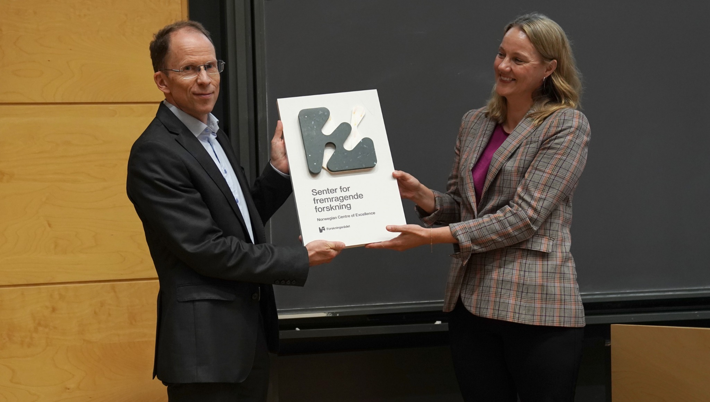
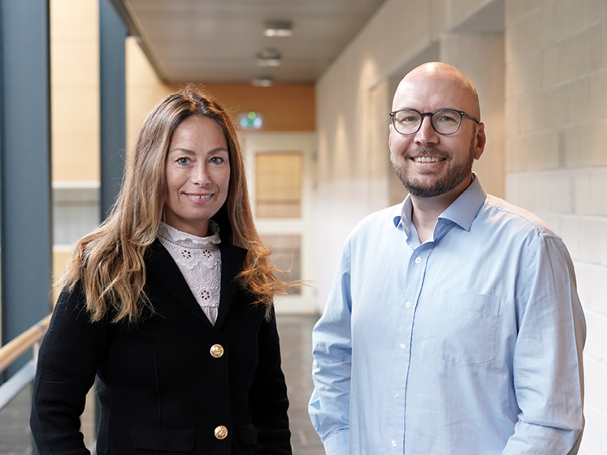
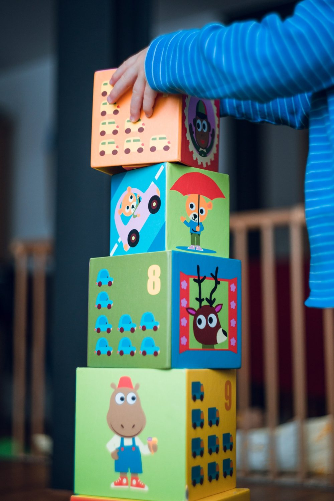

SENTER FOR FREMRAGENDE FORSKNING · 2023–2033
CREATE
Senter for forskning på likhet i utdanning. Vi undersøker hvorfor forskjeller i læring oppstår, og hvordan de kan reduseres.
Jeg forsker på hvordan barn utvikler språk-, lese- og matematikkferdigheter, hvorfor lærevansker oppstår, og hvilke pedagogiske tiltak som hjelper barn å lære.
Jeg holder foredrag og bidrar på fagdager for skoler, barnehager, fagmiljøer og andre som arbeider med barns læring og utvikling. Innholdet bygger på forskning og kan tilpasses målgruppe og arrangement.
Ta gjerne kontakt for å diskutere et foredrag, en fagdag eller et annet faglig arrangement.
Forskningssentre og fire sentrale områder innen barns læring, utvikling og effekten av pedagogiske tiltak.

Senter for forskning på likhet i utdanning. Vi undersøker hvorfor forskjeller i læring oppstår, og hvordan de kan reduseres.

Forskning på spesialpedagogiske behov, kartlegging og inkluderende opplæring.
Jeg undersøker hvordan muntlig språk utvikler seg, hvorfor språkvansker oppstår, og hvilke språktiltak som virker.
Jeg forsker på hvordan leseferdigheter utvikles, hvorfor lesevansker oppstår, og hvordan leseopplæring og tiltak kan forbedres.

Jeg studerer tidlig tallforståelse, matematikkvansker og effekten av forskningsbasert matematikkundervisning.
Jeg undersøker kognitive ferdigheter, individuelle forskjeller og muligheter og begrensninger ved kognitiv trening.
Jeg er professor ved Institutt for spesialpedagogikk, Universitetet i Oslo, og professor ved UiT Norges arktiske universitet. Forskningen min handler om barns språk-, lese- og matematikkutvikling, hvorfor lærevansker oppstår og opptrer sammen, og hvilke tiltak som har effekt.
Jeg arbeider med longitudinelle studier, randomiserte kontrollerte forsøk, systematiske kunnskapsoversikter og metaanalyser. De siste årene har jeg også undersøkt genetiske og familiære faktorers betydning for barns læring. Et viktig mål er å knytte solid forskning tettere til pedagogisk praksis.
Ti publikasjoner fremhevet i CV-en min, om lesing, matematikk, tiltak, utvikling og genetiske påvirkninger.
Sammen med Terje Ogden. Innføringsbok i spesialpedagogikk.
Lærebok om språk-, lese- og matematikkvansker.
Jeg har bidratt til utvikling og forskning på ressurser som ThinkMath, SpråkLøft, LURI, ReadWell, SpråkHagen og DIBELS.
Last ned fullstendig CV (PDF) ↓ Engelsk CV (Word) ↓ Norsk CV (Word) ↓
Denne nettsiden gir et utvalg fra CV-en. Den fullstendige CV-en inneholder også veiledning, undervisning, gjesteopphold og konferansebidrag.
monica.melby-lervag@isp.uio.no ↗
Institutt for spesialpedagogikk
Universitetet i Oslo · Norge